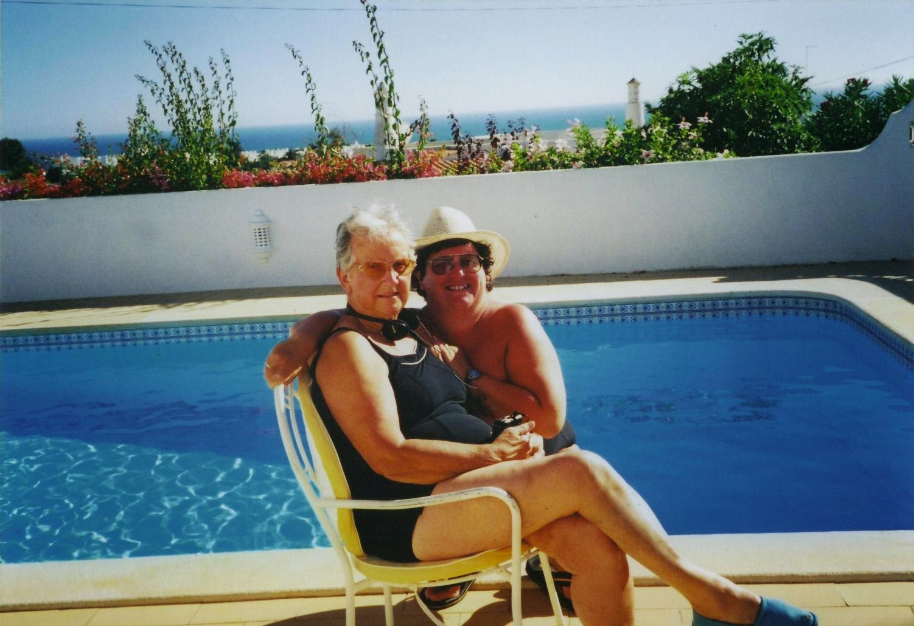

2000
Early Summer Porto & Douro Valley
 Another Page & Moy holiday, with Mum, Dad and Jean, this time to Oporto and the
Douro Valley. We flew to Oporto with Sian, our UK rep. She was a History of Art graduate studying for a PhD, and was with us for the whole
trip. We also had a Portuguese rep, Leonore. All trips under Portuguese law have to have a qualified Portugeuese tourist guide. Day 1 we
had a part bus/part walking tour of Oporto, including
a stop at the very pretty Mercado do Bolhão. We also had a tour of a
port house located in Vila Nova de Gaia on the opposite side of the river from
Cais da Ribeira. The tour included
lunch. There was a good view of the Ponte de Dom Luís I.
Another Page & Moy holiday, with Mum, Dad and Jean, this time to Oporto and the
Douro Valley. We flew to Oporto with Sian, our UK rep. She was a History of Art graduate studying for a PhD, and was with us for the whole
trip. We also had a Portuguese rep, Leonore. All trips under Portuguese law have to have a qualified Portugeuese tourist guide. Day 1 we
had a part bus/part walking tour of Oporto, including
a stop at the very pretty Mercado do Bolhão. We also had a tour of a
port house located in Vila Nova de Gaia on the opposite side of the river from
Cais da Ribeira. The tour included
lunch. There was a good view of the Ponte de Dom Luís I.We then went by bus up the Douro to Peso da Régua and embarked on a boat trip further up the river. We passed one of the Barcos Rabelos, which are the traditional Portuguese wooden cargo boats used to transport people and goods along the Douro River. There are a number of locks on the river, and we went through the spectacular Barragem Carrapatelo, which is a concrete gravity dam, where the river forms the border line between the districts of Porto and Viseu. We cruised up the river to Pinhão. Our hotel was on the Douro riverside, the Vintage House Hotel. This was an 18th-century wine lodge and converted into a hotel by port makers Taylor's.
Sian and Leonore were obviously friends from previous trips and they had decided on a possible change of itinerary. We were given a choice of our original destination, or Guimarães, which was their recommendation. We voted for Guimarães, which has the Palace of the Dukes of Braganza, and is a UNESCO World Heritage city. We took a look at the outside of the Palace, but whilst the rest of the group went inside for a tour, we went to a local cafe for a coffee/white wine.
Our next trip was to Casa de Mateus. This is the palace that features on the wine label for Mateus Rose, and used to be winery. We had a look around the ornamental gardens.
 From there we went to Lamego, location of the Santuãrio Nossa Senhora dos Remédios. This sanctuary has a monumental Baroque staircase made of 686 steps in nine separate sections. Pilgrims are supposed to ascend this staircase on their kneees. Mum, Jean and I all decided to stay on the bus with Dad and get a lift to the top and not climb the staircase! There was also a tour of the Museu de Lamego, which had a wide ranging display of exhibits. They take great pride in their paintings of Vasco Fernandes, more popularly known as Grão Vasco, and the collection of Flemish tapestries. Grão Vasco's altarpiece was particularly interesting, and was what caused me to start an Open University Humanities course when we got home. The more energetic of us went on a small boat trip on the river. There was also a trip up into the hills for a long lunch sampling the local white wine made from grapes harvested from the vineyard we were at.
{kind=link}